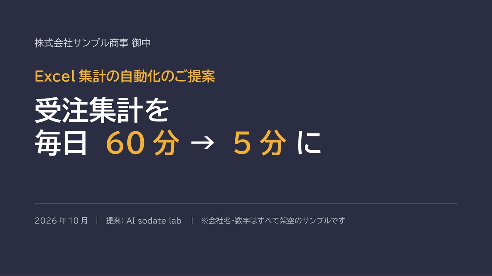

← 制作実績一覧へ戻る
見本 全10枚
営業提案書「Excel集計の自動化のご提案」
課題から提案、効果、費用まで、1つの流れで読んで決めてもらえる営業提案書です。数字を大きく見せ、今と導入後を並べて、何が変わるかをひと目で分かるようにしました。

作ったもの
「毎日60分かかる受注集計を5分に」という架空の提案を題材にした、10枚の営業提案書の見本です。課題、原因、提案、効果、機能、進め方、お見積り、サポート、次のステップの順に、読む人が迷わず決められる流れにしました。会社名・金額・数字はすべて架空のサンプルです。
スライドを1枚ずつ見る
工夫した点
- 数字を大きく見せ、「今」と「導入後」を並べて、何が変わるかをひと目で分かるようにしました。
- 課題 → 提案 → 効果 → 費用 → 次のステップと、決めるまでの順に並べています。
注意
会社名・金額・数字はすべて架空のサンプルです。実在の会社・サービスとは関係ありません。